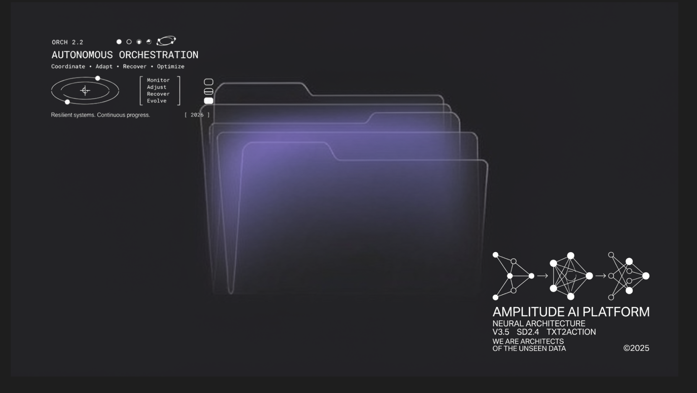
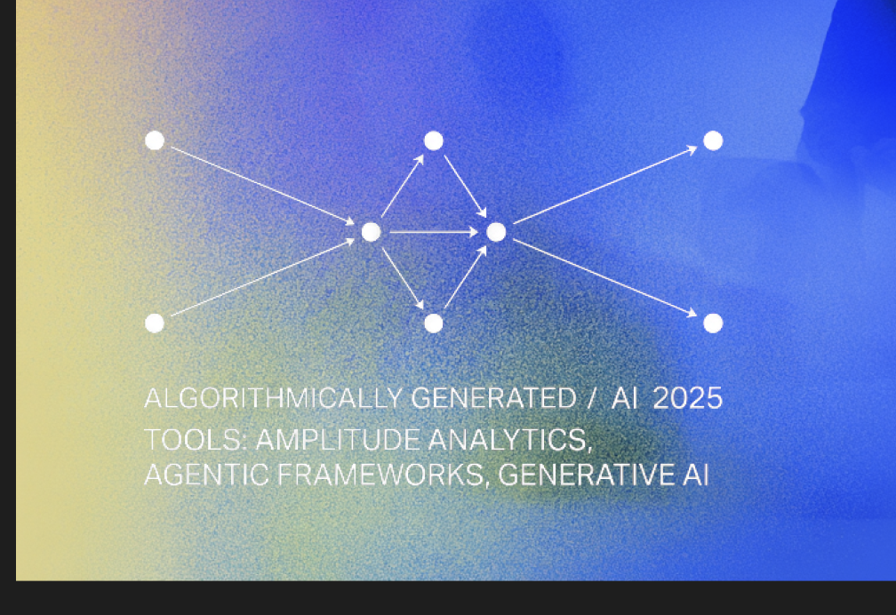
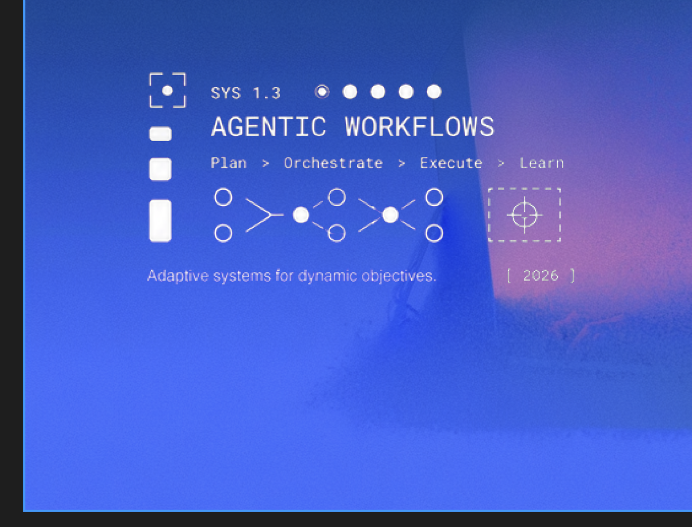
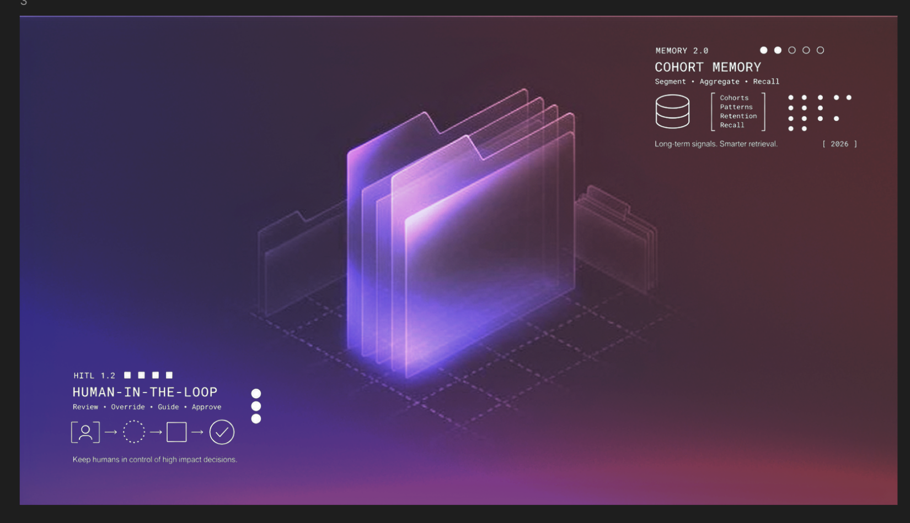
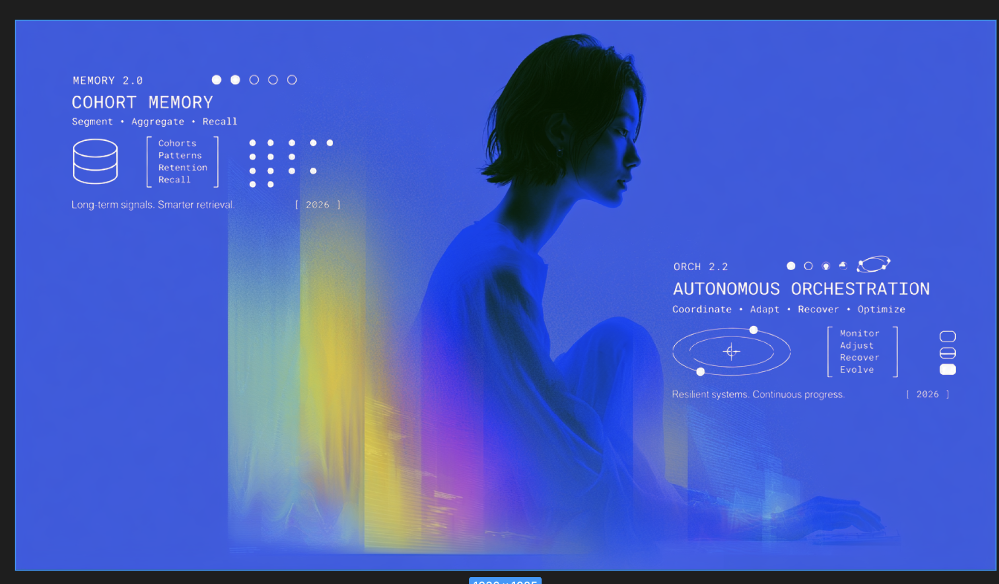

Inspiration from the brand team for the v13 (HUD / technical-poster) treatment. The two dimensions to nail: (1) custom SVG micrographics as a durable system, (2) subtle, grainy, textured gradients.





MICROGRAPHIC SYSTEM (extracted): orbital glyph (concentric tilted ellipses + crosshair + planet dots) · neural-architecture node clusters with arrows · agentic-workflow node chains (pairs → filled node) · signal-funnel (many → one ranked) · bracket lists [ Monitor / Adjust / Recover / Evolve ] · dot-matrix grids · progress dots (one ringed "current") · stacked chips (rounded rects, bottom filled) · reticle (dashed box + ⊕) · database cylinder · version stamps (SYS 1.3 / ORCH 2.2 / MEMORY 2.0) + [ 2026 ].
GRADIENT/TEXTURE: near-black base, soft desaturated purple/indigo glows (not vivid), occasional faint warm (amber) bleed; heavy fine film grain over everything; subtle vignette. Mono white line-art at ~1.4px stroke.